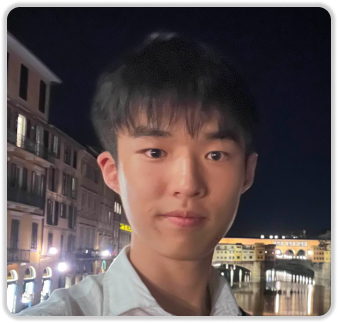
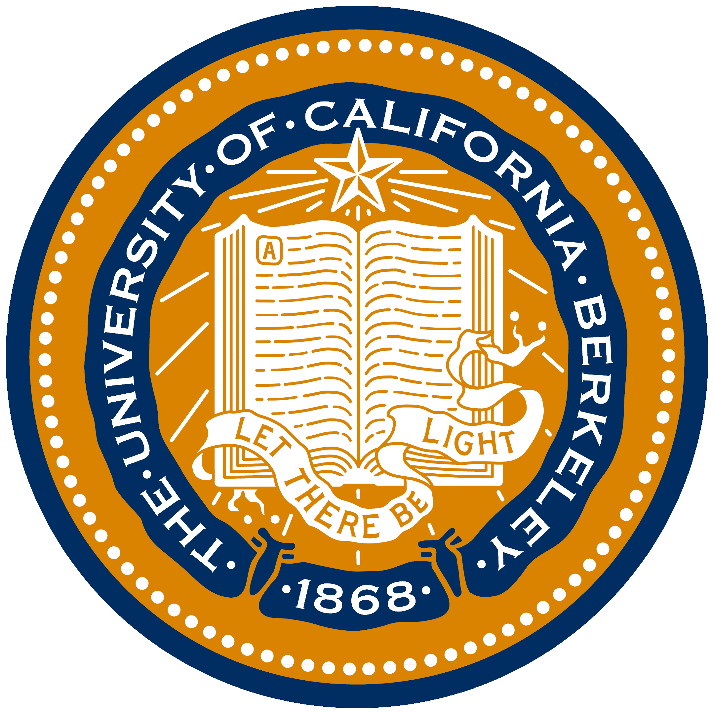

Kevin Park

About Resume Academics Personal Work
Contact
kp0374 [at] princeton [dot] edu
I am a fourth-year undergraduate student at Princeton University majoring in Mechanical Engineering with a minor in Robotics. I am advised by Professor Anirudha Majumdar at IRoM Lab, where I am working on world models for robotics. I additionally collaborate with the EMBER Center at UC Berkeley

on humanoid whole body control. I am also a researcher in the Seung Lab, where I work on RL for proofreading computer-using agents to accelerate connectomics.I previously worked on synthetic data generation for soft body robotic manipulators in the Princeton Robot Planning and Learning Lab under Professor Tom Silver. I interned at the Volvo Group doing structural design for electric buses and at IBM working on coding agents.
Feel free to reach out over email!
I am applying to Ph.D. programs in robotics for Fall 2027.
∎